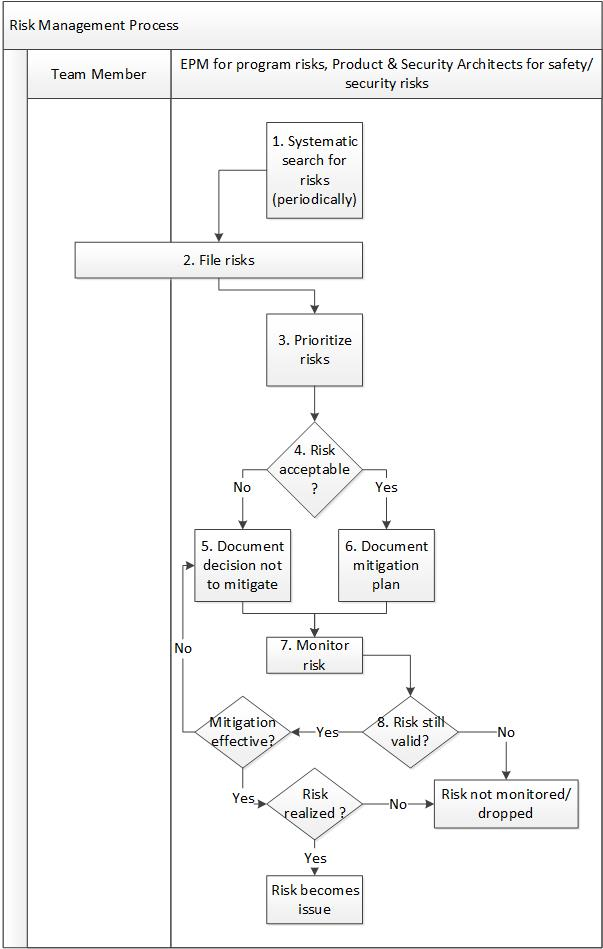
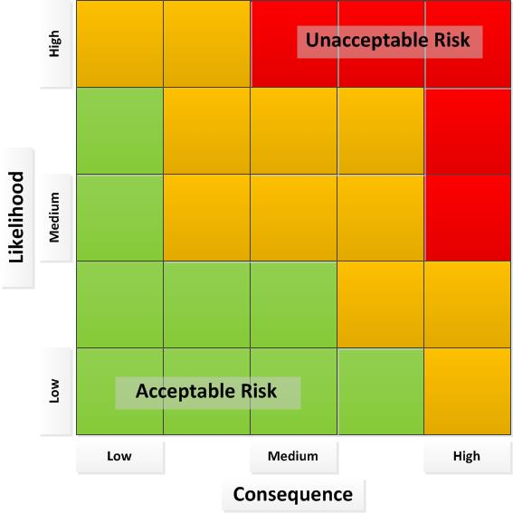

Risk Management Process¶
This process describes the search for risks, filing of risks, determining actions to take, monitoring risks, and evaluating the effectiveness of actions. For program risks, the EPM is responsible for managing this process. For security or safety risks, the Product and Security Architects are responsible for managing this process.
Entry Criteria |
Potential risk identified |
Inputs |
Information about a potential risk |
Exit Criteria |
A risk is not realized, or a risk is realized and becomes an issue. |
Outputs |
|
Activities¶

Step # |
Activity Name |
Description |
|---|---|---|
1 |
Search risks (periodically) |
On a regular basis, systematically search for risks before they become issues adversely affecting the program. The EPM & other Key Stakeholders (e.g., Technical Feature Owner, Engineering Manager, Test Lead, Product Manager etc.) are responsible for this activity for program risks. The Product and Security Architects are responsible for identifying safety and scurity risks. |
2 |
File risks |
When a risk is found, a risk record is opened. Any team member may open a risk. |
3 |
Prioritize risks |
The EPM/Key Stakeholder prioritize risks based on the likelihood and impact. The diagram under the “Tools and Templates” section illustrates risk likelihood and impact. |
4 |
Document mitigation |
The EPM/Key Stakeholder look at the likelihood of a risk occurring and the consequences of the occurrence. Very likely risks with severe consequences must be mitigated. Less likely risks with lower consequences might not be mitigated, depending on the cost of mitigation balanced with the cost of realizing the risk. The diagram under the “Tools and Templates” section illustrates this method of decision making. The EPM/Key Stakeholder document in the risk record the decision not to mitigate the risk and why. The “why” will be useful if circumstances change later. ~OR~ The EPM/Key Stakeholder document the mitigation plan in the risk record. The plan includes what is to be done and who is responsible for doing it. |
5 |
Monitor risk |
The EPM/Key Stakeholder monitor risks on a regular basis. Monitoring includes the activities:
|
6 |
Determine if risk is still valid |
There may be a time when a risk is no longer valid and should be dropped. For example, if a risk is around getting a feature in before a release date and the risk is never realized before the release date, the risk should be marked “not realized” and should no longer be monitored. |
7 |
Review mitigation |
If the mitigation is not effective, determine a new mitigation plan and document it in the risk. If the risk doesn’t have a mitigation plan, but circumstances have changed and the risk is now unacceptable, create a mitigation plan. |
8 |
Determine if the risk is realized |
If the risk has occurred, the risk is now an issue. Document that the risk is now an issue, close the risk, and open an issue according to the Action Issue Process. |
Tools and Templates¶
The following diagram of acceptable and not acceptable risk levels is referred to in the activities above.

Change Log¶
Date |
Change Request ID |
Version |
Change By |
Description |
05/05/2020 |
N/A |
0.1 |
Shree Vidya Jayaraman |
Initial Draft |